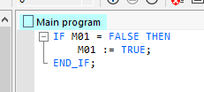

Bit de premier cycle
💻 Code ST
L'activation se fait sur le premier tour de cycle.
IF M01 = FALSE THEN
M01 := TRUE;
END_IF;

⚠️ Important : Placer ces lignes en toute fin de programme.
L'activation se fait sur le premier tour de cycle.
IF M01 = FALSE THEN
M01 := TRUE;
END_IF;

⚠️ Important : Placer ces lignes en toute fin de programme.